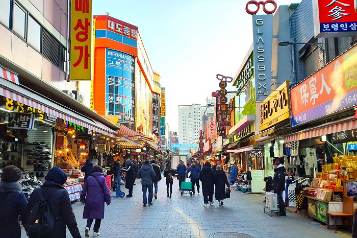
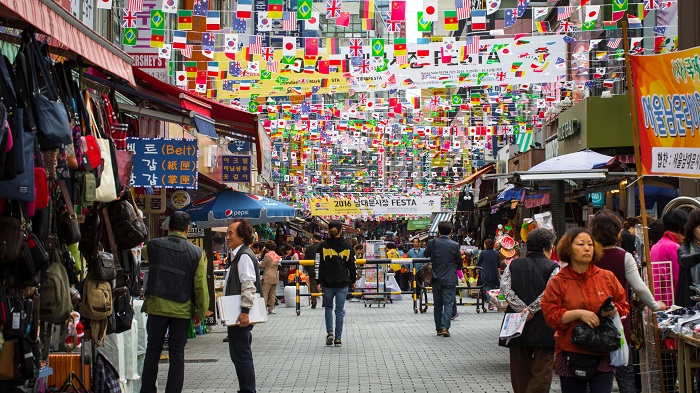
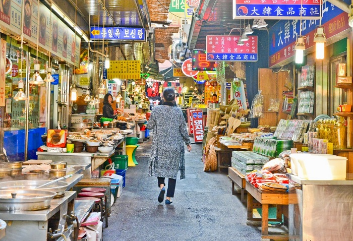
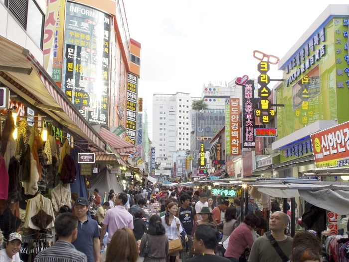
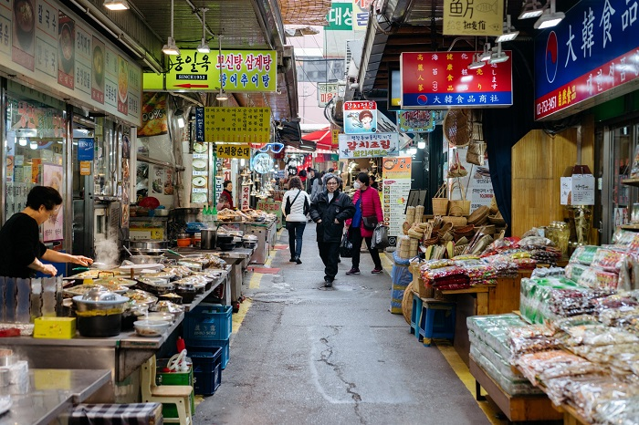
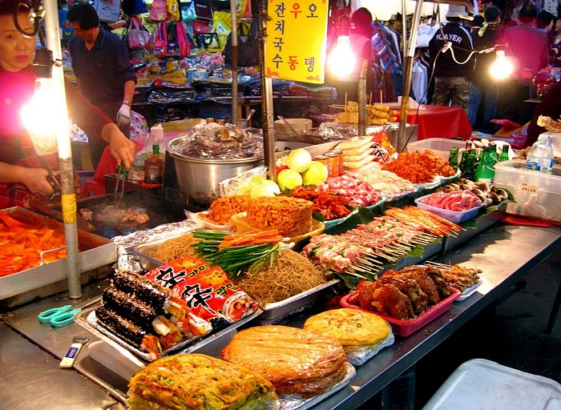

Du lịch Hàn Quốc
Welcome to Korea
Welcome to Korea
Namdaemun là khu chợ truyền thống lớn nhất Hàn Quốc. Tại đây, không chỉ đi tham quan, bạn cũng có thể tìm mua được các loại trái cây và rau củ tươi ngon nhất, là đặc sản của xứ sở kim chi. Chợ cũng là cửa ngõ để bạn bước vào thế giới ẩm thực Hàn Quốc với các món ăn đặc sắc và đậm vị, đặc biệt là các món ăn đường phố nổi tiếng. Namdaemun là khu chợ tấp nập, náo nhiệt, mở liên tục xuyên đêm từ 11 giờ đêm đến 4 giờ sáng hôm sau.

Thủ đô Seoul luôn là điểm đến không thể bỏ qua khi đến du lịch Hàn Quốc. Nơi đây không chỉ có những khu vui chơi giải trí hiện đại, những trung tâm thương mại sầm uất mà còn hấp dẫn bởi rất nhiều những khu chợ truyền thống, ẩn chứa vô vàn điều thú vị. Một trong số đó không thể không nhắc đến chợ Namdaemun. Vậy chợ Namdaemun ở Hàn Quốc bán gì? Cách di chuyển đến đây như thế nào? Ngay bây giờ chúng ta sẽ cùng nhau khám phá nhé.
Namdaemun là một trong những khu chợ lớn và có lịch sử lâu đời nhất của Hàn Quốc, tọa lạc tại khu vực phía Nam của thủ đô Seoul, có địa chỉ tại số 21, Namdaemunsijang 4-gil, Jung-gu, Seoul. Đã từ nhiều năm nay, chợ Namdaemun luôn được xem là một trong những điểm đến du lịch không thể bỏ qua đối với du khách khi có dịp đặt chân tới thành phố Seoul, Hàn Quốc.
Chợ Namdaemun ở Hàn Quốc có diện tích vô cùng rộng lớn, lên đến hơn 66 nghìn mét vuông, với hơn 10,000 quầy hàng lớn nhỏ khác nhau, cả khu vực bên trong và bên ngoài chợ. Bạn có thể tìm mua được mọi thứ cần thiết tại đây. Không chỉ vậy, Namdaemun còn là điểm đến tuyệt vời để bạn có thể hòa mình vào với cuộc sống thường ngày của những người dân Hàn Quốc và tìm hiểu những nét văn hóa, ẩm thực đặc sắc của họ.
Mặc dù chính được thành lập từ năm 1964 nhưng theo nhiều tài liệu ghi chép lại, lịch sử của chợ Namdaemun đã bắt đầu từ năm 1414, dưới thời vua Thái Tông. Khi đó, chợ chủ yếu buôn bán các mặt hàng ngũ cốc, trái cây và cá.
Sau khi bị Nhật chiếm đóng, năm 1922 chợ đã rơi vào tay của Nhật Bản. Năm 1945, đất nước được giải phóng và các thương gia đã thành lập nên Tổ chức thương gia Namdaemun để nắm quyền quản lý khu chợ. Tuy nhiên, trong cuộc chiến tranh Triều Tiên năm 1953, chợ đã bị thiêu rụi bởi một trận hỏa hoạn. Năm 1954, việc tái xây dựng khu chợ được tiến hành nhưng do nguồn tài chính hạn hẹp nên chiến dịch này đã thất bạn. Đến năm 2010, chợ chính thức được xây dựng rộng hơn, đẹp hơn và trở thành trung tâm mua sắm sầm uất nhộn nhịp bậc nhất Seoul như ngày nay.
Như đã nói ở trên, chợ Namdaemun ở Hàn Quốc có diện tích vô cùng rộng lớn, lên đến hơn 66 nghìn mét vuông. Nó được xây dựng từ khi xe cộ còn chưa phát triển vì vậy những con đường bên trong chợ khá nhỏ, ô tô không thể đi vào được. Việc vận chuyển hàng hóa ra vào khu chợ chủ yếu được thực hiện bằng xe máy. Các con đường kết nối với nhau chằng chịt, với rất nhiều ngõ tắt quanh co. Người ta vẫn thường ví Namdaemun giống như một mê cung vậy. Và nếu không cẩn thận bạn rất có thể bị lạc đấy.
Đến khám phá chợ Namdaemun ở Hàn Quốc, bạn sẽ có thể tìm mua được mọi loại hàng hóa khác nhau tại hơn 10,000 quầy hàng nơi đây. Chợ mở cửa suốt ngày đêm và lúc nào cũng tấp nập du khách cũng như người dân địa phương đến tham quan và mua sắm. Mọi người còn nói đùa với nhau rằng, Namdaemun bán tất cả mọi thứ trên đời, chỉ trừ vũ khí hạt nhân.

Khu vực được nhiều du khách ghé thăm nhất chính là khu bán hàng thời trang, vải vóc. Bạn có thể tìm mua được rất nhiều mặt hàng thời trang mẫu mã đa dạng, thời thượng với giá cực rẻ tại chợ. Ngoài ra, nơi đây còn có một mặt hàng được rất nhiều du khách Việt yêu thích đó chính là hàng da, được bán nhiều ở trong tòa nhà 4 tầng nằm ở giữa khu chợ.
Nếu như bạn muốn tìm mua những mặt hàng lưu niệm độc đáo để làm quà thì chợ Namdaemun ở Hàn Quốc chắc chắn cũng sẽ là địa điểm lý tưởng dành cho bạn.
Bất cứ khu chợ nào của Hàn Quốc cũng đều có những món ăn vô cùng thơm ngon, hấp dẫn để bạn thưởng thức. Và dĩ nhiên chợ Namdaemun cũng không phải là ngoại lệ. Một số món ăn bạn không nên bỏ qua tại đây như: súp mandu-guk, bánh bindae duk, …
Cách đi đến chợ Namdaemun phổ biến nhất được nhiều du khách lựa chọn đó chính là tàu điện ngầm. Bạn hãy đi tuyến số 4 , xuống tại ga Hoehyeon và đi ra ở cửa số 5.
Bên cạnh đó, bạn cũng có thể đi taxi nếu muốn được thoải mái. Dưới đây là giá cước từ một số địa điểm đến chợ Namdaemun bạn có thể lựa chọn:
GỢI Ý TOUR DU LỊCH HÀN QUỐC |
|---|
>> Du Lịch Hàn Quốc: Hà Nội – Seoul – Lotte World – Trượt Tuyết Jangjipine 5 Ngày Trượt Tuyết Bay Jeju Air chỉ với 12.500.000 đồng
|
Top 20 điểm tham quan nhất định phải ghé thăm trong hành trình chinh phục Seoul

Điện thoại: 0903357616
Email: thaontps24690@fpt.edu.vn